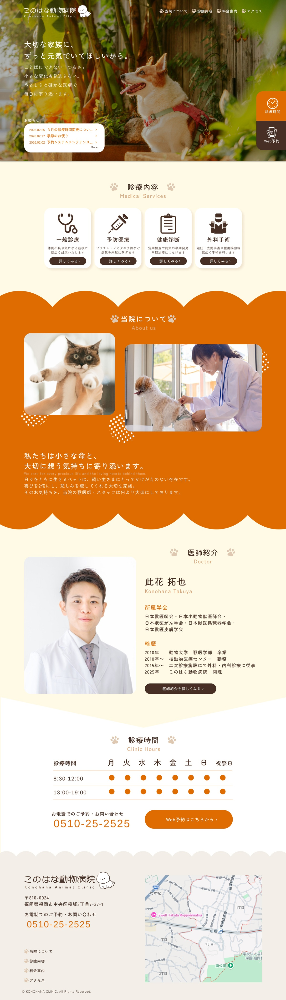
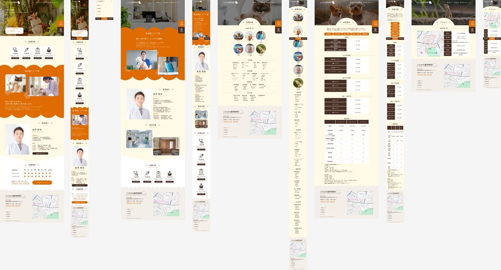

Website ｜ 自主制作
このはな病院
「病院サイト」をテーマに 飼い主さんに寄り添った温かみのある動物病院のHPを制作しました。
冷たさを感じさせない配色や、明確な料金体系で安心してご来院いただけるような雰囲気づくりに力を入れています。

ペルソナ
愛犬を家族同然のように大切にする50代の女性。
もうすぐシニアに差し掛かるので安心して任せられる病院を探している。
もうすぐシニアに差し掛かるので安心して任せられる病院を探している。
クライアントの悩み
治療方針や病院の雰囲気を知ってもらいたい。
料金体系を明確にすることで安心してご来院いただきたい。
料金体系を明確にすることで安心してご来院いただきたい。
目的
スタッフの写真や内装を掲載し、温かみのある印象を抱いてもらう。
診療内容・料金・アクセスを明記して予約もスムーズに行えるようにする。
診療内容・料金・アクセスを明記して予約もスムーズに行えるようにする。
情報設計のこだわり
予約ボタンを固定配置にすることで、どのページからでもスムーズに予約へ進めるようにしました。
トップページには基本的な情報を整理して掲載し、必要に応じてクリックすることで詳しい内容にたどり着ける設計にしています。
また、フッターにもナビゲーションを設けることで、操作に慣れていない方でも最後までスクロールするだけで直感的にページ移動ができるよう工夫しました。
デザインのこだわり
あらゆる世代の方にとって使いやすいサイトを目指し、PC・スマートフォンの両方に最適化したデザインにしました。
情報の切り替わりごとに背景を変えることで視覚的に区切りをつけ、文字サイズも大きめに設定することで、より見やすく分かりやすい構成にしています。
また、トップページの写真やキャッチコピーにもこだわり、ペットを大切に想う気持ちに寄り添う姿勢が自然と伝わるよう工夫しました。さらに、親しみを持ってもらえるように手書きのイラストをロゴに添え、やわらかく温かみのある印象に仕上げています。
制作期間
企画1週間
デザイン1週間
コーディング2週間
使用ツール
ibisPaintX | Photoshop | Figma | SublimeText
